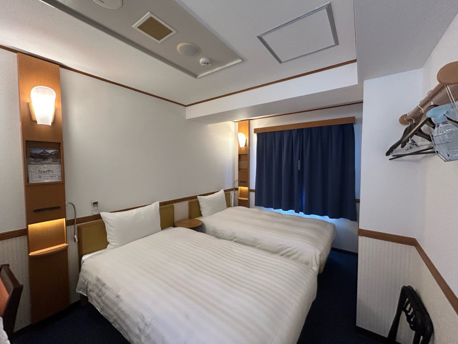
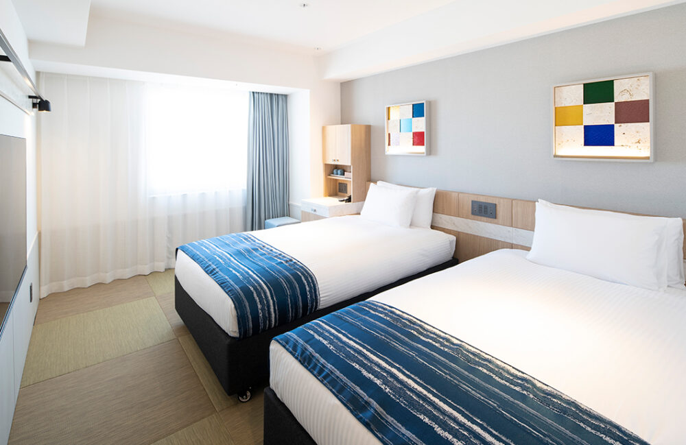

前 4 晚：東橫INN 那霸旭橋站前

早餐時間：06:30 - 09:00
房間面積：15 平方公尺
床型規格：兩張單人床（單床尺寸 110×200cm）
後 2 晚：沖繩逸之彩溫泉度假飯店 (牧志站)

早餐時間：07:00 - 10:00
房間面積：20 平方公尺
床型規格：兩張單人床（單床尺寸 120×200cm）
✈️ 行李額度與登機規範
免費行李額度：手提 7 公斤，托運 23 公斤
⚠️ 重要注意事項：
- 行動電源與鋰電池：必須手提隨身攜帶，航程中全程禁止使用。
- 液體、膠狀及噴霧類：
- 手提：每瓶限制 100ml 以內，且須全部裝入 1 公升以下透明夾鏈袋。
- 托運：超過 100ml 一律托運。
- 銳利物品：各類剪刀、刀具及金屬指甲剪等嚴禁隨身攜帶，必須托運。
Day 1 (11/07 六) 抵達
| 時間 | 行程與交通細節 |
|---|---|
| 10:19 - 12:42 | 普悠瑪 271 (花蓮 - 台北) |
| 17:05 - 19:45 | 華航 CI122 (桃園 - 沖繩) |
| 20:30 | 搭電車至旭橋站，東橫INN辦理入住 |
Day 2 (11/08 日) kkday 北部一日遊巴士
| 時間 | 行程細節 |
|---|---|
| 06:00 - 07:00 | 享用早餐 |
| 07:50 | 那霸縣廳前 RYUBO百貨 BLUE SEAL 店鋪前集合 |
| 08:00 | 準時出發 |
| 09:20 - 09:50 | 萬座毛 |
| 10:50 - 11:20 | 古宇利海洋塔 |
| 11:40 - 15:40 | 美麗海水族館 |
| 17:00 | 美國村享用晚餐 |
| 19:00 | 搭乘計程車返回飯店 |
景點照片：美麗海水族館

Day 3 (11/09 一) 沖繩世界王國與牧志市場
- 07:00 - 08:00：享用早餐
- 上午行程：參觀玉泉洞鐘乳石、觀賞傳統王國大鼓秀
- 下午行程：第一牧志公設市場享用午餐，國際通漫活散步購物
景點照片：玉泉洞與沖繩風情

Day 4 (11/10 二) 採購與看秀
- 07:00 - 08:00：享用早餐
- 10:00 - 18:00：PARCO CITY 購物行程與享用午餐
- 20:30 - 22:00：Churasun 6 現代熱舞秀
- ⚠️ 秀場提示：必須攜帶護照，20:00 開放入場，20:20 前必須入場，逾時票券會被賣掉！
景點照片：PARCO CITY 購物中心

Day 5 (11/11 三) 換飯店 & Klook燈光秀巴士
- 07:00 - 08:00：享用早餐
- 11:00：東橫INN退房，將行李移至逸之彩飯店寄存
- 12:10：縣廳前站 Blue Seal 集合
- 12:30：搭乘 Klook 巴士（行程包含：波上宮、殘波岬、美國村、東南植物樂園燈光秀）
- 21:30：返回縣廳前解散
景點照片：燈光秀與植物園

Day 6 (11/12 四) 計程車輕鬆日
- 07:00 - 08:00：享用早餐
- 中午：DMM 數位光影水族館參觀
- 下午：瀨長島海景散步與下午茶
景點照片：瀨長島海景
Day 7 (11/13 五) 返家行程
| 時間 | 行程與交通細節 |
|---|---|
| 07:00 - 08:00 | 享用早餐 |
| 09:15 | 飯店退房，牧志站搭乘單軌電車前往那霸機場 |
| 11:50 - 12:25 | 華航 CI121 (沖繩 - 桃園) |
| 15:43 - 18:01 | 普悠瑪 236 (台北 - 花蓮) |
沖繩旅遊區域地圖